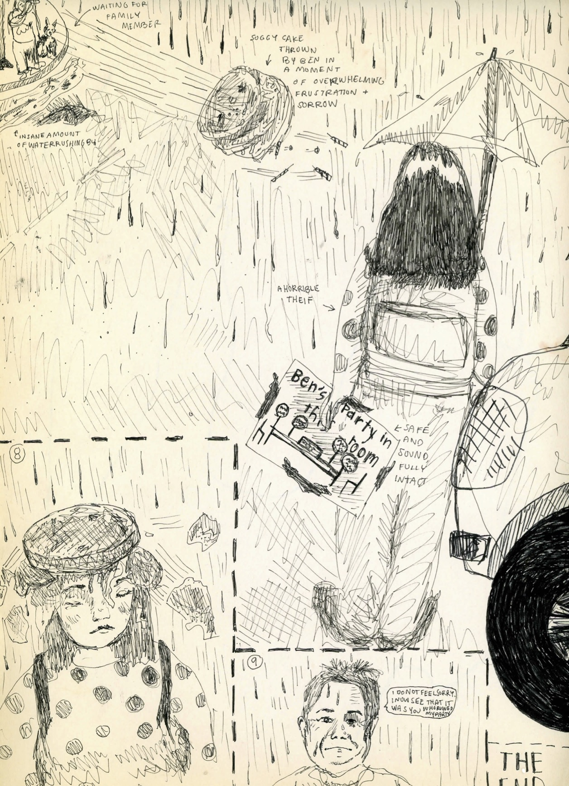

1. Girl sees a sign on a door which reads, "BEN'S PARTY IN THIS ROOM" and takes the sign because it is really funny and cool and she assumes Ben's party is proably over because it is so late.
2. Ben Coonley's party-goers cannot find his late night party so they leave.
3. Ben sits in the Integrated Arts room with his uneaten cake, his deflated party baloons, his pet cat Otto, his daughter Clara. They wait for guests to arive. They play patty cake to pass the time. No one comes to his party.
4. Security hears the patty cake from the Avery hallway and politely asks Ben and family to leave the building because it is past midnight.
5. The three characters stand outside in the rain waiting to be picked up by Ben's wife. They did not know it was going to rain so they have no umbrellas and there is nowhere to take cover.
6. The frosting slides off the cake, the cake is absolutely ruined by the rain.
7. Ben looks at the soggy, pathetic cake and he gets so mad that he throws it cross the parking lot.
8. The girl who stole the sign which reads, "BEN'S PARTY IN THIS ROOM" is walking back to Avery as she left behind an important belonging. The thrown cake hits her directly in the face. She holds an umbrella and the perfectly intact birthday sign.
9. Ben sees that she is holding the sign that he made. He feels no guilt. She was the reason for his disappointing birthday.